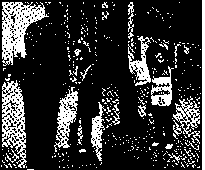
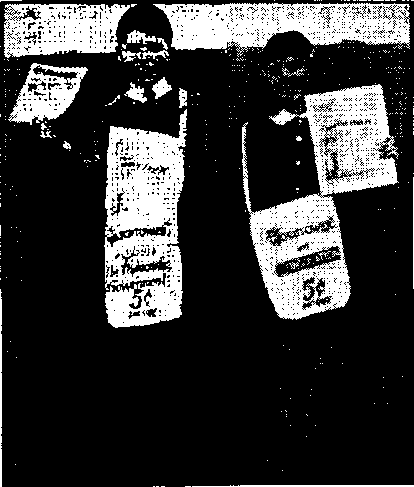
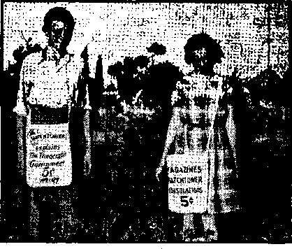
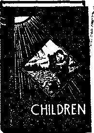

Contents
Abraham Lincoln, the "Heretic”
Under the Totalitarian Flag
The “People’s Reporting Service”
Supreme Deference to Aristotle
Counsel by J. F. Rutherford
Spiritism —■ “Psychiana” Like the Clergy 19
The New Government
John Bull on Uncle Sam’s Side!
Published every other Wednesday by WATCHTOWER BIBLE AND TRACT SOCIETY, INC.
117 Adams St, Brooklyn, N. Y„ U. S. A.
Editor Clayton J. Woodworth
Business Manager Nathan H. Knorr
Five Cents a Copy fl a year in the United States fl.25 to Canada and all other countries
NOTICE TO SUBSCRIBERS
Remittances: For your own safety, remit by postal or express money order. When coin or currency is tost in the ordinary mails, there is no redress. Remittances from countries other than those named below may be made to the Brooklyn office, but only by International postal money order.
Receipt of a new or renewal subscription will be acknowledged only when requested. Notice of Expiration is sent with the journal one month before subscription expires. Please renew promptly to avoid loss of copies. Send change of address direct to us rather than to the post office. Your request should reach us at least two weeks before the date of issue with which it Is to take effect. Send your old as well as the new address. Copies will not be forwarded by the post office to your new address unless extra postage is provided by you.
Published also In Afrikaans, Bohemian, Danish, Dutch, Finnish, French, German, Greek, Hungarian, Japanese, Norwegian, Polish, Portuguese, Spanish, Swedish, Ukrainian; also special Australian edition In English.
OFFICES FOR OTHER COUNTRIES
England 34 Craven Terrace, London, W. 2
Canada 40 Irwin Avenue, Toronto 5, Ontario Australia 7 Beresford Road, Strathfield. N.S.W. South Africa 623 Boston House, Cape Town
Entered as second-class matter at Brooklyn, N. Y., under the Act of March 3, 1379.
Notanda
America Succumbs
♦ Events of past history are brought to the attention of Consolation readers because they further expose the deadly hypocrisy of Romanism. These circumstances add .to the burden of evidence that the American Republic is the victim of religion and the only hope for the people is The Theocracy.
The independence of the United States of America is 165 years old. The birthday of liberty was celebrated as usual last 4th of July with fireworks and oratory, while Liberty lay on her deathbed.
The Great Experiment, as the free Republic was dubbed from the outset by Catholic monarchists, is dying this year. Its demise was freely predicted by Romanists and joyfully anticipated by all popes. It cannot be cured. It is the victim of that “foe of all free governments”, Vatican Rome. The struggle has been bloody. The slain in all the wars from Adams to Roosevelt can be laid at the door of the guilty, intriguing Jesuits, tool of the Papacy. ~
The graves of both the Blue and the Gray silently accuse the Rome which stirred up the Civil War. The blood of the valiant Lincoln, the victim of Jesuit conspiracy, was mingled with the rivers of gore that flowed from North and South to sate the mounting hatred of the Roman Catholic Hierarchy directed against the free United States. Four other presidents gave their lives in the fight against the Hierarchy. Now the struggle has ended. America succumbs, body and soul, to the domination of Rome. As proof that our forefathers died in vain, I submit that, although every statement is a historical certainty, not one newspaper in the land will dare to print the above facts.
Now the Hierarchy professes to teach loyalty to the flag by advocating the enforced salute. Are we to submit to instruction from traitors?—Elton Groves.
“And in His name shall the nations hope.”—Matthew 12:21, A.R.V.
Volume XXIII Brooklyn, N. Y., Wednesday, November 26, 1941 Number 579
Jesuit Destroyers
(In Two Parts—Part 1)
Fate of Heretics
HE present assignment of the Jesuits, religious gestapo of Roman Catholicism, appears to be the humiliation and destruction of Jehovah’s witnesses. After working the flag-salute issue threadbare, and screaming the false charge of disloyalty, they resorted to another much-used weapon, mob incitement. Christians continue.to suffer cruelly at the hands of Rome’s agents.
Throughout the United States everybody except the fanatics understands the position of Jehovah’s witnesses. Honest people respect their courageous stand for righteousness, and their refusal to compromise under terrible assaults from God’s enemies.
One Jesuit oath makes this understandable :
“Our business is to contrive: 1st, That Catholics be imbued with hatred for heretics, whoever they may be, and that this hatred shall constantly increase, and bind them closely to each other. 2nd, That it be, nevertheless, dissembled, so as not to transpire until the day when it shall be appointed to break forth.”
Jehovah’s witnesses have had occasion to observe the operation of the rule: “until the day . . . appointed to break forth.” The attempt to wreck the Madison Square Garden assembly in 1939 was begun at a light signal; the riots and assaults in June, 1940, were simultaneous throughout the nation, operating on orders from a central conspirator.
It is also well known that Hitler’s legions strike when, and only when, the Jesuit forerunners have betrayed the country in advance; the only exception being England, where they have not succeeded as yet.
Enemies of America
Jesuits are the destroyers of liberty, happiness and life. They have now operated for four hundred years as the secret police of the Roman Catholic Hierarchy. The bloodiest pages of history resulted from operations and incitements of these most effective warmongers of all time. Their business is discord, deception and destruction.
So diabolical is this institution that it is certainly the creation of the Devil himself. He alone could be responsible for such a monstrous malignancy, rotting empires and consuming flesh. Jesuitry has its roots in Satan’s invisible kingdom and was, no doubt, molded by the power of the Dragon. The Scriptures show that its desolation will precede that of the Devil.
In this article it is not the purpose to glorify some creatures nor to injure others. It deals with the deeds of Jesuitry because of their claim to serve the Lord' and to be His specially appointed substitute or deputy upon earth. Observe their official name, “Society of Jesus.” If the truth calls them into disrepute it is not with design to hurt individuals. But rather the desire is to show the honest that no protection can be derived from them; and their claims to represent the Lord are false, fraudulent, and productive of death.
It is further intended that an understanding of the falsity of this organization will be an incentive for many to turn to the Bible and there find Jehovah’s wonderful provision to save the obedient from the frightful conditions which imperil all human creatures.
There is an interesting similarity between the conduct of the Jesuits toward Jehovah’s witnesses today, and their past action against the American Republic and its leaders during the seventy years from 1830 to 1900. It was the hatred of the Jesuits that accomplished the death of Abraham Lincoln1 and thousands of others. Study of these facts is important because the Jesuits today have constituted themselves the teachers of “patriotism”. Those who have been deceived by such false claims will do well to ponder the following record taken from the pages of history.
Special consideration is given the destructive influence of a Jesuit conspiracy upon the United States for the last hundred years. The course of this study takes us back to the bier of a murdered president and the causes which led to his death. Abraham Lincoln is well known to American history students as a champion of righteousness as he saw it, and as the victim of an assassin’s bullet. It is now seventy-six years since he was shot at Ford’s Theatre in Washington, April 14, 1865.
One imperfect man’s death is not important, even a Lincoln’s. Today the all-important thing is The Theocracy, soon to be ushered in completely by the glorious Son, Christ Jesus, who, after tasting death for all who would obey Jehovah, is "alive for evermore”, (Revelation 1:18; Hebrews 2:9) But the assassination of Lincoln was an act in the furtherance of a conspiracy which has a bearing on the present. It serves to reveal the black perfidy of the same Jesuit organization which presumes to teach loyalty and love of flag by violence and persecution heaped upon Jehovah’s witnesses at this very day. As the self-appointed guardians of "patriotism”, the record of the Jesuits becomes interesting.
For this reason it may be profitable to delve into events which are mournful to most Americans: those dark and fateful days from 1860-65, when this land was bathed in its own blood. Today the Catholic Hierarchy conspiracy which killed Lincoln is bearing even more fruit. Lincoln was appointed to die as the head of a government which cherished freedom of worship1. Today Jehovah’s witnesses are appointed to the same cup of death, but their Elder Brother, Christ Jesus, will intervene to utterly depopulate their oppressors.
Jesuit Guilt
The proof is conclusive that Lincoln was killed in the execution of a Papal or Jesuit Hierarchy conspiracy to destroy the United States because of the nation’s hated principles of freedom and equality; and this unabated conspiracy is reaping a harvest of wickedness today, paralyzing every department of press and government in its fearful clutches. One of the results is the open exchange of emissaries between this government and the Vatican. ("Myron Taylor Returns to Vatican”—AP Dispatch September 4)
The reason for this friendliness between Roosevelt and the Vatican is not the result of Papal favors to the United States in the past. Their conduct when bloody conflict tore this land in twain it is well for Americans to remember. Those who think that Catholic priests have been assisting the Catholic population to enjoy the “American way of life” will also do well to consider these few pages from past history.
It must be remembered that the Declaration of Independence aroused great animosity among the Catholic Hierarchy of Europe, and among the Catholic Mo-narchial heads, who feared the spread of . this “pernicious” freedom. This is made certain by the words of La Fayette uttered shortly after the success of the Revolution: “American liberty can only be destroyed by the Popish clergy.” “Foreign Conspiracy Against the Liberties of the United States” is the title of a book by S. F. B. Morse (1836) which divulges the formation of a conspiracy by the Leopoldines and Jesuits whose set purpose was the dissolution of the infant Republic. This same Morse who invented the telegraph and the Morse code was so impressed by the danger that he risked his life to get these facts before the people.
Morse several times warned Lincoln. On this we have the word of an exRomanist, “Father” Chiniquy, whom Lincoln had once defended from false charges made by Papal agents. {Fifty Years in the Church of Rome, pages 702, 706, 714) Chiniquy also quotes Lincoln as saying that the United States ambassadors in France, England and Italy had warned him likewise.—
“I saw Mr. Morse, the learned inventor of electric telegraphy; he told me that, when he was in Rome, not long ago, he found proof of the most formidable conspiracy against this country and all its institutions. It is evident that it is to the intrigues and emissaries of the pope that we owe, in great part, the horrible civil war which is threatening to cover the country with blood and ruins.”—Lincoln, same authority, page 692.
Just what the mission Rome expected to accomplish is clearly stated by Chiniquy:
In a word, Rome saw at once that the very existence of the United States was a formal menace to her own life . . . From the very beginning, she sowed the germs of division and hatred between the two great sections of this country, and she felt an unspeakable joy when she saw that she had succeeded in dividing its South from its North, on the burning question of slavery. She looked upon that division as her golden opportunity. To crush one party by the other, and reign over the bloody ruins of both, has invariably been her policy. She hoped that her hour of supreme triumph over this continent was come. [It has almost come now, 1941.] She ordered her elder son, the Emperor of France, to keep himself ready to help her crush the North, by having an army in Mexico ready to support the South, and she hade all the Roman Catholic bishops, priests and people to enroll themselves under the banners of slavery, by joining themselves to the party of Democracy.—Pages 690-1.
Another ex-Romanist, Burke McCarty, states that when this Papal decree went forth, of 144,000 Irish Catholics enlisted in the Union Army, 100,000 deserted to the Confederacy! (Suppressed Truth About the Assassination of Abraham Lincoln, page 55) Efforts of priests throughout the Northern States to recruit sympathizers for the South and spread disaffection became such an open scandal that Lincoln was forced to threaten several bishops with criminal prosecution. The president’s own Words were: “The New York riots were evidently a Romish plot from beginning to end. We have the proofs in hand, that they were the work of Bishop Hughes and his emissaries.”—Chiniquy, page 703.
These words of Lincoln have seldom been quoted:
“This war would never have been possible without the sinister influence of the Jesuits. We owe it to Popery that we now see our land reddened with the blood of her noblest sons. Though there were great differences of opinion between the South and the North, on the question of slavery, neither Jeff Davis nor any one of the leading men of the Confederacy would have dared to attack the North, had they not relied on the promises of the Jesuits, that, under the mask of Democracy, the money and arms of the Roman Catholics, even the arms of France, were at their disposal, if they would attack us. I pity the priests, the bishops and the monks of Rome in the United States, when the people realize that they are, in great part, responsible for the tears and the blood shed in this war; the later the more terrible will the retribution be. I conceal what I know, on that subject, from the knowledge of the nation; for if the people knew the whole truth, this war would turn into a religious war, and it would, at once, take a tenfold more savage and bloody character. It would become merciless as all religious wars are. It would become a war of extermination on both sides. The Protestants of both the North and the South would surely unite to exterminate the priests and the Jesuits, if they could hear what Professor Morse has said to me of the plots made in the very city of Rome to destroy this republic, and if they could learn how the priests, the nuns, and the monks, who daily land on these shores, under the pretext of preaching their religion, instructing the people in their schools, taking care of the sick in the hospitals, arc nothing else but the emissaries of the Pope, of Napoleon (III], and the other despots of Europe, to undermine our institutions, alienate the hearts of our people from the constitution, and our laws, destroy our schools, and prepare a reign of anarchy here as they have done in Ireland, in Mexico, in Spain, and wherever there are any people who want to be free.”-—-Chiniquy, same volume, pages 699-700.
Could Borne forgive a man who knew her devices so well? And as president of the hated Republic, he was a thousandfold more dangerous I There is doubtless nothing in the Jesuit book of villainy that was not adapted to bring about the final ‘liquidation” of Lincoln.
The nature and oaths of the Jesuits make this clear.
“The Jesuits are a 'military organization, not a religious order. Their chief is a general of an army, not the mere father abbot of a monastery. And the aim of this organization is: Power. Power in the most despotic exercise. Absolute power, universal power, power to control the world by the volition of a single man. Jesuitism is the most absolute of despotisms; and at the same time the greatest and the most enormous of abuses.”-—Memorial of the Captivity of Napoleon at St. Helena, by General Montholon, vol. ii, page 62 (quoted by Chiniquy, pages 684-5).
Secret Plans of the Jesuits, page 127, reiterates the oath:
Our business is to contrive:
1st, That the Catholics be imbued with hatred for the heretics, whoever they may be, and that this hatred shall constantly increase, and bind them closely to each other.
2nd. That it be, nevertheless, dissembled, so as not to transpire until the day when it shall be appointed to break forth. [Note in this connection that priests and others in St. Joseph, Minnesota, knew in advance that the assassination of Lincoln had been set for April 14. See Chiniquy’s, pages 730-5.)
3rd. That this secret hate be combined with great activity in endeavoring to detach the faithful from every government inimical to us, and employ them, when they shall form a detached body, to strike deadly blows at heresy.
Abraham Lincoln, the “Heretic"
Lincoln called “Father” Chiniquy into his office one day to find out why the Catholic press throughout the nation falsely charged that he had been baptized a Catholic and was therefore an apostate : “They call me a renegade, on account of that; and they heap upon my head mountains of abuse. At first, I laughed at that, for it is a lie. Thanks be to G-od, I have never been a Roman Catholic..No priest of Rome has ever laid his hand on my head. But the persistency of the Romish press to present this falsehood to their readers as gospel truth, must have a meaning. Please tell me, as briefly as possible, what you think about that.”
Chiniquy: “Let me tell you that I wept as a child when I read that story for the first time. For, not only my impression is, that it is your sentence of death; but I have from the lips of a converted priest, that it is in order to excite the fanaticism of the Roman Catholic murderers, whom they hope to find [Booth and all eight of the convicted conspirators were Roman Catholic] sooner or later, to strike you down, they have invented that false story of your being baptized by a priest. They want by that to brand your face with the ignominious mark of apostasy. Do not forget that, in the Church of Rome, an apostate is an outcast, who has no place in society, and who has no right to live.
“The Jesuits want the Roman Catholics to believe that you are a monster, an open enemy of God and His Church, that you are an excommunicated man . . . ”
“My dear president,” continues Chiniquy, “I must repeat to you here what I said to you when in Urbana, in 1856, My fear is that you will fall under the blows of a Jesuit, if you do not pay more attention than you have done, till now, to protect yourself. Remember that because Coligny was an heretic, as you are, he was brutally murdered in the St. Bartholomew [by order of Catherine de Medici, queen of France and niece of the pope, 1572]; that Henry IV was stabbed by the Jesuit assassin, Revaillac, the 14th of May, 1610, for having given liberty of conscience to his people, and that William the Taciturn [William I of Holland, slain 1584, for championing the Protestant cause] was shot dead by another Jesuit murderer, for having broken the yoke of the Pope. The Church of Rome is the'same today [and today, 1941] ...”
Chiniquy summarizes the reasons for the Hierarchy’s hatred of Lincoln:
“The unanimity with which the Catholic hierarchy is on the side of the rebels, is an incontrovertible evidence that Rome wants to destroy this republic, and as you are, by your personal virtues, your love for liberty, your position, the greatest obstacle to their diabolical scheme, their hatred is concentrated upon you; you are the daily object of their maledictions ; it is at your breast they will direct their blows. My blood chills. in my veins, when I contemplate the day which may come, sooner, or later, when Rome will add to all her other iniquities, the murder of Abraham Lincoln. , . . ”—Pages 694-5.
Hierarchy Against the Union
On the banks of the Rio Grande, about fifty miles from where it empties wearily into the Gulf, is a little town called Matamoros. It is south of the border, in Old Mexico. Southern historians of the Civil War, such as Waddy Thompson, put little emphasis on one of the most revealing angles, which had its finale in the sleepy little village just across the Texas line. From here, in the year 1866, embarked one of the armies which the pope had sent to fight against the beleaguered Union.
The time that Napoleon III selected for the establishment of his Mexican empire, 1863, saw the bitterest fighting between the Union and the Confederacy. There can be no doubt that the Papacy was seeking an opportunity to intervene in behalf of the Southern army through the French-Catholic monarch, Napoleon, who sent Maximilian and Carlotta to rule Mexico. They were supported by 30,000 French-, Belgian-, and Austrian-Catholic troops. As proof of the close relation between this Mexican venture and the pope’s interest in dissevering the Union, it was freely talked in the South that Napoleon would help the Confederacy, and when Carlotta was sent to Europe her final appeal was to the pope, whose harsh refusal to aid Maximilian came after the defeat and surrender of Lee’s army.
Corroborating the Papal backing of Maximilian the following translation from the Spanish of Julio Oliva Ramos’
The Religious Problem, of Mexico, 1926-1929, is noteworthy:
The shrewdness of the Mexican [Catholic] clergy had caused many years’ delay in the application of the legal precepts which directly affected the interests of the Catholic Church of Mexico. In other words, the clergy had mocked the laws of the Nation with impunity.
To obtain said impunity the clergy had set up the Presidents of the Republic as it wished, and had extended its influence to all governmental activities. To preserve and perpetuate its pre-eminence and privileges the clergy of Mexico had called in Maximilian to be the emperor of Anahuac [poetic name for Mexico] ; and for the purpose of raising him to the throne by armed force, three foreign nations had formed what is commonly called the Triple Alliance. I would call it the gruesome gang. Said alliance culminated in the French intervention of 1862, which intervention was requested and supported by the high clergy of Mexico, as shown both by the undeniable historic documents and physical facts well known to all, such as when Maximilian was received in the Cathedral of Mexico City, solemnly and triumphantly by the archbishop of the metropolis.—Page 1. Translation by Eduardo Keller.
But a year before this, and while there was still hope of bringing victory for the Gray, the pope’s army under Maximilian stood poised in Mexico, while intrigue was freely conducted between Jeff Davis, then recognized officially, and his Papal confidants in Canada. Meanwhile the personal conspiracy against Lincoln was progressing steadily, under Jesuit tutelage, to its execution.
House of the Conspirators
It is agreed by all historians that the conspiracy to assassinate the president, and General Grant, and several members of Lincoln’s cabinet was matured, if not actually hatched, in the house at 561 H St., Washington, D.C. It was owned and operated by a devout Catholic, Mrs. Mary Surratt, later tried and convicted with eight others. She was among the four against whom the evidence was so damning as to bring on their heads the sentence of hanging; four others were sent to Dry Tortugas, a terrible prison off the coast of Florida. Her son John, through the aid of priests, escaped to Canada, thence to the Vatican, where he was enlisted with the Papal Zouaves, under the name of Watson. Discovered by an American, he was extradited, but allowed to escape by Papal officers, but finally apprehended in Alexandria, Egypt. Two years after his mother’s execution he was tried, and, by the exercise of much Jesuit pressure, acquitted. Schoolmates from the Jesuit hatchery at Georgetown constantly thronged the courtroom; and his connection with the Roman Catholic Church was emphasized instead of withheld as would have been the case of a righteous organization involved ; while the government prosecutor was forced to try to keep the religious issue out of the proceedings in order to prevent the cry of partiality.
This will give some idea of the Surratt connection with the priesthood. It was brought out at the trial of the mother that the residents of her house were “the most devoted Catholics in the city”. Priests were frequently seen there, and one Catholic witness testified that one priest was living with Mrs. Surratt. Chiniquy asks pointedly:
What does the presence of so many priests, in that house, reveal to the world ? No man of common sense who knows anything about the priests of Rome can entertain any doubt that, not only they knew al! that was going on inside those walls, but that they were the advisers, the counselors, the very soul of that infernal plot. Why did Rome keep one of her priests under that roof, from morning till night, and from night till morning? Why did she send many others, almost every day of the week, into that dark nest of plotters against the very existence of the great republic, and against the life of her President, her principal generals and leading men, if it were not to be advisers, the rulers, the secret motive power of the infernal plot.—Page 719.
Since those days the Hierarchy’s guilt in Lincoln’s death has been plainly manifest in sedulous efforts to destroy all evidence of the crime. Miss Burke McCarty quotes a letter from Admiral George W. Baird, U.S.N., retired, 33rd-degree Mason of Washington, in 1921, the only living witness who helped to identify the body of John Wilkes Booth, the appointed killer of Lincoln, who was shot to death in the tobacco barn on the Garrett plantation, near Port Royal, Virginia, April 26, 1865, twelve days after the murder:
1505 Rhode Island Ave.
Washington, D.C., Nov, 29, 1921
Miss Grace McCarty
Grace Dodge Hotel ■
Washington, D.C.
My dear Miss McCarty:
Your letter of the 25th received. . . . My acquaintance with John Wilkes Booth was not at all intimate. I met him in New Orleans in the winter of ’63 and ’64, when he was playing in the theatre there in “Marble Hearts”, and he was splendid in his part. . . . The War was at its height and was freely discussed, but Booth did not seem to be much interested in it. . . . [He was not really a zealot for the South, but later picked by Jesuit lot to shoot the president.]
On the' night of the 14th of April, 1865, I went to call on a young lady and about 10: 30 her brother came in and said Abe Lincoln is dead. He had been to the theatre to see Laura Keene in “Our American Cousin” and during the play a man [Booth] had got into the box where the President was, and had shot the President, jumped out of the box on to the stage, and escaped from the back door of the stage. ...
The newspapers had the story very early, that John Wilkes Booth was the assassin and David Herold was the accomplice. . . . Though never intimate with John Wilkes Booth, I admired him, his voice, power of declaiming. I took drinks with him at the Franklin House, Custom House Street, a place frequented by army and navy officers. He seemed to me to have no interest in the war. It was hard to understand. I had seen him but once in Washington and that was about three weeks before the murder of the President. It was on Sunday when he was coming out of Saint Aloysius Catholic Church Vesper Service. . . .
[Booth’s body was returned to Washington on board the “Montauk”.] I was called on board the Montauk by Lieut. W. W. Crowninshield, to identify the body of John Wilkes Booth, which I did. I noticed a piece of cord about the size of a cod line on his (Booth’s) neck and invited Crowninshield’s attention to it, who pulled it out and on it was a small Roman Catholic medal. Surgeon General Barnes arrived at that moment and probed the wound in Booth’s neck. . . .
I saw the medal when it was taken off Booth’s neck and I saw it afterwards in the War Department. It was kept in a safe of the Judge Advocate General. It was in a little tin box which also contained a newspaper scrap referring to it with the bullet from Booth’s neck, and I think the derringer also.
When I became the superintendent of the S.W. and Navy Department in 1895, I asked the messenger at the Judge Advocate’s door if the relics were still on exhibition as I wanted to show them to some friends, and he said that they were all there but the medal, that the Secretary of War (Mr. Lamont) had sent for them to show some friends and forgot to return them and they remained on his desk four months, and when returned the medal was missing. . . .
[The balance of the letter concerns the writer’s visit to Surrattville, where Mary Surratt owned another home; and further evidence that led to her conviction and hanging.]
[Signed] G. W. Baird.
A word more about this medal which was “lost”.
It is morally certain that Booth himself had been secretly taken into the Roman Church when he was given the “Agnus Dei” medal which was taken from his neck. The significance of this medal is: The translation of “Agnus Dei” is “Lamb of God”; it indicates sacrifice—the shedding of blood. The writer is informed by an ex-Romanist who examined the medal that it was made in Rome, probably sent direct from the Pope as was Pius IX’s letter to Jeff Davis, a distinction which would tend to flatter the vanity of John Wilkes Booth.—McCarty’s Suppressed Truth About the Assassination of Abraham Lincoln, page 108.
Knights of the Golden Circle
This name, like “Knights of Colum* bus”, “Knights of St. Gregory the Great” (one member of this chapter is ex-Judge Martin T. Manton, “knighting” in federal Prison till October 13, 1941), “Knights of Defender-of-the-Faith” (Franco, the ‘Butcher’, is best known of those receiving this degree), designates a strictly Roman Catholic Order. The members have performed or are expected to perform some special service for the pope. Miss McCarty, quoted above, relates that The Great Conspiracy, a book published in 1866 by Barclay Co., Philadelphia, recites the Jesuitical oath of this society, and she adds: “There is no doubt but that all the conspirators were members of the Knights of the Golden Circle; there is also no doubt that while some of them were nominal Protestants they were wholly papalized. . . . John Wilkes Booth had been initiated into the Knights of the Golden Circle in Baltimore in the fall of 1860, ‘in the residence opposite the [Catholic] Cathedral.’”— Pages 90, 108.
It appears that a change came over Booth late in the year 1864, after which time the Jesuit virus possessed him completely. Prior to that.time he had doubtless “drawn the lot”, and became the appointed killer.
cFather” Chiniquy spent twenty years gathering the evidence of the Papal origin and direction of the plot, and he encountered the difficulties which beset all researches in the field of Papal crimes: an unwillingness to talk. Rome is exceedingly adept at covering her guilt. But the implication was freely discussed by many Americans in those postwar days.
The foolishness of men who think they can ignore the warning of a danger, and thus avoid it! Chiniquy summarizes his efforts as follows:
I saw, with profound distress, that the influence of Rome was almost supreme in Washington. I could not find a single statesman who would dare to face that nefarious influence and fight it down, except General Baker. [Baker, in discussing the trial, had used these words to Chiniquy: “I mention, as an exceptional and remarkable fact, that every conspirator in custody is, by education, a Catholic.”]
Several of the government men, in whom I had more confidence, told me: “We had not the least doubt that the Jesuits were at the bottom of that great iniquity; we even feared, sometimes, that this would come out so dearly before the military tribunal that there would be no possibility of keeping it out of the public sight. This was not through cowardice, as you think, but through a wisdom which you ought to approve, if you cannot admire it. Had we been in days of peace, we know that with a little more pressure on the witnesses, many priests would have been compromised; for Mrs. Surratt’s house was their common rendezvous ; it is more than probable that several of them might have been hung. But the civil war was hardly over. The Confederacy, though broken down, was still living in millions of hearts; murderers and formidable elements of discord were still seen everywhere, •to which the hanging or exiling of those priests would have given a new life. ... We were all longing for days of peace.”—Page 725.
As a consequence of this government trepidation, the Hierarchy was left secure to plot the deaths of other presidents, Garfield and McKinley becoming later victims. And today the Hierarchy is so well ensconced that nothing but the Lord can oust her. This He has promised to do, and will do with lasting results. —Nahum 1:9.
Rome’s Guilt Manifest
All writers who ignore his Papal connection have professed bewilderment to find an adequate motive for the crime of Booth. Though practically all books on the subject have disappeared from the libraries, it is clear that the man was nothing but the Jesuitized instrument of Rome. He was not an ardent Secessionist; for, during its height, Booth took little interest in the war. He performed no service for the Confederacy. The murder was indeed a terrible blow to the Soiith, because it served only to aggravate the bitterness of the North, bringing excesses during the Reconstruction. The assassination but opened wider the wound in the nation.
The bitter memories, prejudice and hatred that followed in the wake of the war served to blind the two factions to the encroaching enemy of both, the Roman Catholic Hierarchy.'Only the Jesuits and their master in Rome profited by the striking down of Lincoln. “Jesuitism is a sword whose hilt is in Rome and it points everywhere.” The whole monstrous scheme was devised abroad, and directed through Rome’s chosen emissaries of destruction.
Religious Rome was the sole beneficiary in the legacy of discord and disunion which was the chief bequest of the bloody strife. How that struggle was revived and kept alive I Almost to this very day the narratives of mothers and grandmothers bereft by Rebel sword or , Yankee bullet fill their children’s minds with venom; the exploits of Lee have become legend, the heroic example for Southern boys to emulate; and in the states above “the line”, Grant and Sherman are the valiant war-horses who liberated the nation from the contemptible Southern slaver. Many people still live, though the war ended more than 76 years ago, who cannot hear the mention of those days without the stirring of old and bitter hates.
To them, and to all who love the American flag as a symbol of freedom, to be respected but not worshiped, these words are addressed: The burden of guilt for this fratricidal strife, for its sorrow and affliction, lies' at the door of the Jesuit Hierarchy, who have always hated the free institutions of the United States. The slaying of Lincoln was but one act in the progressive conspiracy to destroy the liberal government symbolized by the Stars and Stripes. McCarty and other authorities disclose that this was neither the first nor the last attempt by Rome’s minions.
Harper’s New Monthly Magazine, issue of June, 1868, gives the details of “The Baltimore Plot to Assassinate Abraham Lincoln” which was foiled in 1861. Before Lincoln, presidents William Henry Harrison (1841) and Zachary Taylor (1850) died by the Jesuit poison cup, according to McCarty, and Lincoln’s immediate predecessor, Buchanan, was so frightened by an attempt to poison him that he remarked on retiring, “As George Washington was the first president, so James Buchanan will be the last president of the United States.” Presidents James A. Garfield (1881) and William McKinley (1901) fell by the leaden bullet, victims of the unabated fury of the Roman Catholic Hierarchy. Connecting all these crimes, and disclosing the common cause, is the Jesuits’ venomous hostility against “the American way of life”. It explains as well the terrible riots stirred up against Jehovah’s witnesses at Litchfield, Waxahachie, Del Rio, Rawlins, and other places too numerous to mention. But let her do her worst, because she herself nears the destruction so often meted out to her enemies. “Now is the end come upon thee, and I will send mine anger upon thee, and will judge thee according to thy ways, and will recompense upon thee all thine abominations. And mine eye shall not spare thee, neither will I have pity: but I will. recompense thy ways upon thee, and thine abominations shall be in the midst of thee; and ye shall know that I am the Lord.” (Ezekiel 7:3,4.)—Elton Groves.
Mr. Taylor’s Expensive Trip
♦ The ex-president of the Steel Trust, Myron C. Taylor, Mr. Roosevelt’s personal ambassador to the pope, made a flying trip to Rome, but the only tangible result is that he made a present to the pope of his $500,(XX)mansion at Florence. It is supposed that Mr. Roosevelt wished the pope to declare the war against Germany a just war, but it is alleged that the pope said ‘No’ on three grounds:
First. That on a strictly doctrinal theoretical basis there is no such thing as “a just war,” and the Holy See cannot therefore take such a stand. Second. The United States and Britain have doctrines, interests and political aims of their own; the Holy See has doctrines, interests and political aims of its own. Third. The doctrines, interests and political aims run parallel, but the very fact of parallelism means that they do not and cannot meet.
The pope is too clever a politician to come right out and tell Taylor and Roosevelt that he is squarely on the side of Hitler and fervently hopes Hitler will obtain control of the world; but that is the plain truth, as every reader of this magazine knows full well. It was Pacelli, the present pope, who, as Papal nuncio in Berlin, paved the way for Hitler to come to power in Germany. This is well known and there is no excuse for either Taylor or Roosevelt to he ignorant of that fact or of all that has occurred since to put Hitler on the road to world control, with the Hierarchy, of course, sitting astride his neck and guiding him.
In a wireless dispatch from London, published in the Saturday Evening Post, Demaree Bess says that for more than a year Hitler’s agents have been working “to recruit support among European Christians”, by which Mr. Bess means Catholics, and goes on to admit that that is what he means. It is this that accounts for the peculiar conduct of Petain, Laval and other Catholic Frenchmen.
When Hitler invaded Russia it took the Italian Catholic paper Avvenire only one day to designate his double-crossing of his former ally as “the anticipation of Anti-Christ” and a couple of days later the Roman Catholic Episcopate of Germany advised all dioceses that the attack on Russia is one “for the Christianity [i.e., the making Catholic] of the world”.
As the war went on, within a month the archbishop of Gorizia, Italy, publicly prayed for an Axis victory over Russia, likening it to an ancient religious crusade, and on the same day (July 20) it was announced that Hitler’s invading forces had with them a good supply of Catholic priests “specially trained to do missionary work in Russian territory occupied by the German armies”. In the United States Catholic opposition to America’s helping Russia became vocal and violent.
The “People’s Reporting Service”
♦ In Germany itself Hitler’s new “People’s Reporting Service” is the Inquisition brought up to date. The priests know all about the private affairs and private opinions of everybody, and wall be sure to lend priceless aid to this campaign.
Hitler and Mussolini have agreed upon the new “European national Hag”. It is to contain the national colors of every nation that has been overrun, and Mussolini’s paper explains that all of France and all of Portugal will be brought into the new state.
Hitler has long since announced his purpose to wipe out at Westphalia the effect on Europe of the first Treaty of Westphalia, which brought to an end the “Thirty Years’ War” and gave Protestantism a legal standing in Europe, even though this fact was never acknowledged by the pope.
Irving Pflaum, foreign editor of the Chicago Times, states that General Weygand, from whom many in the democratic countries hoped so much, relies implicitly on the Vatican for guidance. For that reason he obeys Petain implicitly, and therefore Hitler has not a general in his own army who is more valuable to him at this moment than this same General Weygand.
Spain will most certainly be in the new Pacelli-Hitler European state. Even now this impoverished land pays the church 65,000,000 pesetas a year, has restored all property of the religious orders, made Catholicism the sole religion, given bishops the right to supervise all instruction, and allows civil marriages only when both parties can prove that they are not Catholics.
On one occasion Mr. Winston Churchill had the courage and honesty to say:
It would seem that the Spanish monarchy and all the governments, parliamentary and dictatorial, which have served it, have had to bear a very heavy load on account of the overweening power of the “church”. The various concordats established between civil and religious life in Spain are far more antiquated than those of any other country. Nowhere is such a large proportion of national energy and treasure absorbed in religious institutions; nowhere has the power of the “priest”-hood in temporal matters survived so effectually.
The Hierarchy is so far along its road to world control that hereafter in Japan its officials, and that of no other sect of so-called “Christians”, will be given the rank of imperial appointees.
The Catholic State of Canada
♦ Canada is now a Catholic state, and celebrated its victory over Jehovah’s witnesses by a widely advertised pontifical mass on Parliament Hill in Ottawa itself. All kinds of Protestants put up a big holler, like the man that yelled that his horse had been stolen and then carefully locked his stable door. The altar was erected within the main entrance of the Canadian House of Commons. When the Protestants got together they declared that—
the Roman Catholic Church is today, as it has always been, the most divisive force in human society—the enemy of the home, the enemy of the church, the enemy of all free men, and of all free institutions; that it is a totalitarian system which fastens upon its victims a yoke more deadly than that of Hitler, because it is a yoke which stretches beyond the boundaries of time;
and also that—
nothing is likely to be more destructive of national unity than the Ottawa Government’s subservience to Roman Catholic demands as evidenced in the Mass on Parliament Hill; its acquiescence in Quebec’s anti-conscription attitude ; its granting of extra purchasing hours to gas-eonsumers attending the Three Rivers Eucharistic Congress—a privilege specifically denied to others; the special facilities afforded the Roman Catholic Church for sending Canadian funds to Italy; the use of the facilities of the Ministry of Information for the propagation of Romanism ; and now the most recent affront to the Protestant conscience, the distribution of a Roman Catholic form of prayer , including prayer for the dead, and in Roman Catholic publications, bearing the imprimatur of the Roman Catholic Archbishop of Ottawa, for use by all churches including Protestant churches, in this week of so-called “reeonse-cration”; and many other examples of the evident dominance of Government Departments by Roman Catholic influence.
The Protestants did have one crumb of comfort. In midsummer a Judge Forest had annulled the marriage of a Catholic and his Protestant wife, declaring that the Lutheran minister who married them two years ago had committed a reprehensible act. Within sixty days thereafter the Court of King’s Bench in Montreal decided unanimously that a mixed marriage ceremony performed by a Protestant clergyman is legal and valid in the Province of Quebec. The court sitting in appeal ruled that such a marriage could not be annulled because of the religious faiths of the contracting parties. Thus Judge Forest was reprimanded for his narrow-minded decision.
*The Sword of the Spirit”
♦ Of all fakes ever attempted to be put over on Protestants, the top limit is the so-called "Sword of the Spirit” movement in Great Britain. This was started by the Roman Catholic, Dr. Hinsley, cardinal of Westminster. Purely political, as is every move of the Roman Catholic Hierarchy, it 'was supposed to be purely spiritual. The cardinal invited Anglicans and Free Churchmen to attend, and they came by the thousands. Having no faith in the Bible, they are looking for anything that will keep them coming to the pay window. After the racket had been run for a year, and the cardinal saw that some of the Protestants were beginning to get on to the true purposes of this form of Catholic Action, the cardinal announced that only Catholics could hold office in, or become members of the organization. Cash would be accepted from associate members, i.e., Protestants, and chairs and organs, for churches that had been bombed out, but as far as running the organization was concerned, the Catholics would , do all that themselves, as usual.
The pope recently autographed picture postcards for 30 German officers who were among his visitors. He seems to be an obliging sort of cuss.
Jesuit priests that speak and write German and Russian are flocking into Russia, where they have a big future, so they think. This invasion of Russia was something they knew about long before it took place, and for which they made the original plans.
Supreme Deference to Aristotle
♦ The most striking peculiarity of the instruction in the medieval university was the supreme deference paid to Aristotle. Most of the courses of lectures were devoted to the explanation of some one of his numerous treatises—his Physics, his Metaphysics, his treatises on logic, his Ethics, his minor works upon the soul, heaven and earth, etc. Only his logical treatises had been known to Abelard, as all his other works had been forgotten in western Europe. But early in The thirteenth century all his comprehensive contributions to science reached the West, either from Constantinople or through the Arabs, who had brought them to Spain. The Latin translations were bad and obscure, and the lecturer had enough to do to give some meaning to them, to explain what the Arab philosophers had said of them, and to reconcile them to the teachings of Christianity.
Aristotle was, of course, a pagan. He was uncertain whether the soul continued to exist after death; he had never heard of the Bible and knew nothing of the salvation of man through Christ. One would have supposed that he would have been promptly rejected with horror by the ardent Christian believers of the Middle Ages.—-The Sf ory of Our Civilization, Vol. 1, page 207.
Hitler’s Cabinet Al! Catholics
♦ The New Age (Masonic publication) for September, 1941, draws attention to the fact that since Hess flew to Scotland each and every member of Hitler’s cabinet is a Roman Catholic; and the same is true of the Vichy cabinet and the entire Franco cabinet. All are under instructions and all working in a common cause, and that the worst cause on earth, the slavery of all men to the Jesuits.
Dorothy and the Totalitarian God
♦ Dorothy Thompson, excellent columnist, says that somehow the benign, humane God of her childhood now seems very remote from this universe, that the universe seems directed by demonic forces, that maybe Lucifer is really god and that she fears an age of demonworship is at hand. Dorothy has something there, but needs help to sort things out. What she really needs is to get a full set of Judge Rutherford’s hooks and read them diligently, looking up the scriptures. Then she will find Lucifer, or Satan, has indeed been the god of this world for about 6,000 years, that the demons are now loose in the earth, and that the benign and good and great Jehovah God is about to put an end to all their wicked and malevolent activity in human affairs. Armageddon is at hand to do that very job.
Was Peter the First Pope?
(An Appeal to Christ’s Native Tongue) ♦ In his book The Faith of Our Fathers, chapter- IX, on “The Primacy of Peter”, Cardinal Gibbons writes: “The Catholic Church teaches also, that our Lord conferred on St. Peter the first place of honor and jurisdiction in the government of His whole Church, and that the same spiritual supremacy has always resided in the Popes, or Bishops of Rome, as being the successors of St. Peter. . . . Promise of the Primacy. Our Saviour, on a certain occasion, asked His disciples, saying: 'Whom do men say that the Son of Man is? And they said: Some say that Thou art John the Baptist; and others, Elias; and others, Jeremiah, or one of the Prophets. Jesus saith to ■them: But whom do ye say that I am?; Peter, as usual, is the leader and spokesman. ‘Simon Peter answering said: Thou art Christ, the Son of the living God. And Jesus answering said to him: Blessed art thou, Simon Bar-Jona: because flesh and blood hath not revealed it to thee, but my Father who is in heaven. And I say to thee: that thou art Peter, and upon this rock I will build My Church, and the gates of hell shall not prevail against it. . . . “The word Peter, in the Syro-Chaldaic tongue, which our Savior spoke, means a rock. The sentence runs thus in that language: ‘Thou art a rock, and on this rock I will build My Church.1 ”
The Catholic Encyclopedia, Volume XI, under “Peter”, quotes Jesus as follows : “Blessed art thou, Simon Bar-
Jona: because flesh and blood hath not revealed it to thee, but my Father who is in heaven. And I say to thee: That thou art Peter [Kepha, a rock]; and upon this rock [Kepha] I will build my church [ekklesian], and the gates of hell shall not prevail against it.” Then the Encyclopedia adds: “By the word ‘rock’ the Saviour cannot have meant Himself, but only Peter, as is so much more apparent in Aramaic in which the same word (Kipha) is used for ‘Peter’ and ‘rock’.”
The Catholic Bible, with notes by Rev. Geo. Leo Haydock, has this note regarding Peter and rock: “T. In the Syriac tongue, which is that which Jesus Christ ; spoke, there is no difference of genders, as there is in Latin, between petra, a rock, and Petrus, Peter; hence, in the original language, the allusion was both more natural and more simple.”
Thus by an appeal to the Syriac Version of the Gospel account of the apostle Matthew the Roman Catholic backers of Peter as the first pope try to hold up their argument and to get around the Greek manuscripts, as well as the Latip, on Matthew 16:18, to wit: “And I say also unto thee, That thou art Peter [(Greek) petros; (Latin) petrus—masculine gender]; and upon this rock [(Greek) petra; (Latin) petra—feminine gender] I will build my church.”
The standard version of all the Syriac churches, Nestorian and others, is the Bible translation known as the Peshitta. The Peshitta was produced at Edessa in A.D. 411 and is in classic or Edessene Syriac. The Syriac Peshitto Version is the one that James Murdock, D.D., has translated into English and which is at times quoted in Watch Tower publications. The four “Gospels” were translated into Antiochene Syriac in or about Antioch before A.D. 170, probably by Christians from Palestine. This is called the “Old Syriac” or “Sinaitic Syriac” or “Syro-Antiochene” Version, and is represented by a single Palimpsest manuscript found at Mount Sinai in Arabia by Mrs. Agnes Smith Lewis, who is recognized as an authority on Syriac. From her book entitled “Light on the Four Gospels from the Sinai Palimpsest”, published by Williams and Norgate, London, England, in 1913, we glean the following:
Jesus, who was raised at Nazareth in Galilee, spoke the Galilean dialect of Aramaic, and this dialect bore the same relationship to the literary or Edessene Syriac as does Dorie Greek to Attic Greek or as Scotch to English. If our Lord Jesus had spoken Edessene Syriac, then in that crucial period of His sufferings on the tree on Calvary He would have said: “Lemana shabaqthani?” instead of“Lama sabaqthani?” [“Why hast thou forsaken me?”] as set forth at Matthew 27:46. The first specimen of spoken Aramaic to be found in the Bible is in Genesis 31:47.
Mrs. Lewis expresses regret that before the Sinai Manuscript was turned into a palimpsest, that is, before A.D. 778, it unfortunately lost the leaf which must have contained Jesus’ words, at Matthew 16:18, concerning Peter and the “rock”. But Mrs. Lewis adds: “But we are happily not without a witness as to what the reading of the Old Syriac here [at Matthew 16:18] was. The Cure-tonian Manuscript, which is supposed to give us a revision of the Sinai text, and the Peshitta, which is the Authorized Version of the Syriac Church, agree about it word for word. We must explain that the Syriac language has two genders only, the masculine and the feminine, the feminine doing duty for the neuter [gender]. It is well known that KE PHA, ‘a stone’ (rather than ’a rock’), is feminine. But St. Peter can never in Syriac be mistaken for a stone; because, where he is furnished with a verb or with a relative pronoun [to wit, 'Thou art’], these are always in the masculine; whereas when a stone is meant, these adjuncts [to wit, 'upon THIS rock’] are feminine,—just as in French we say, ‘Cette pierre a ete roulee [This stone has been rolled],’ but in the case of a boy, ‘Ce Pierre est mechant [This Peter is bad].’ . . Thus putting Matthew 16:18 into literal French it would read: “Tu es le Pierre, et sur cette pierre je batirai mon Eglise.”
Thus the appeal of the Roman Catholic Hierarchy to the Syriac Version of the Bible is exposed as failing to establish their point, and the correctness of the presentation by Judge Rutherford in the booklet Uncovered, page 27, fl 1, is further established, to wit:
“Previously, as above stated, Jesus had named Peter 'Cephas’, which also means a stone. When Peter gave the answer above quoted Jesus addressed Peter: 'Blessed art thou, Simon Bar-jona; for flesh and blood hath not revealed it unto thee, but my Father which is in heaven. And I say also unto thee, That thou art Peter; and upon this rock I will build my church; and the gates of hell shall not prevail against it.’ (Matthew 16:17,18) The very language here employed by Jesus shows that he did not refer to Peter as the Stone upon which his church will be built. Why should Jesus use the word ‘also’ if the stone referred to Peter? Clearly this is what the words mean, which I paraphrase: ‘Peter, my Father in heaven has revealed to you that I am the Stone or Rock, Christ the Messiah, whom my Father foretold by his prophets; also your name means a stone; upon this Stone [Myself, the anointed of God and commissioned by Jehovah God] I will build my church.’ In view of the repeated prophecy of Jehovah that the Messiah, Christ, is the Foundation Stone or Rock of His kingdom, how could anyone seriously consider that Jesus would attempt to change the announced purpose of Jehovah and use Peter as the foundation of His church, contrary to God’s expressed purpose ? To conclude that another would be substituted in the place of Jehovah’s anointed King nqt only is wholly unreasonable, but is blasphemous.”
(To be continued)

THE facts that have recently come to pass showing the fulfillment of sacred prophecy conclusively prove that the time for the “battle of that great day of God Almighty” is very near and that in that battle all of God’s enemies shall be destroyed and the earth cleared of wickedness, preparatory to the complete establishment of righteousness for ever. The affairs of the earth then will be under the complete control of the Messiah, God’s Anointed King over His Theocracy; and the faithful men of old, from Abel to John the-Baptist, will be resurrected from the dead as perfect creatures and will act as the representatives on earth of that Theocratic Government. (Hebrews 11:1-40) The Scriptural evidence also abundantly shows that those faithful men will be back on the earth at the beginning of the final battle of Armageddon. From the Scriptures it appears absolutely certain that some of the faithful “remnant” of Jehovah’s anointed witnesses will yet be on the earth when those faithful men appear, and certainly those persons of good-wull toward God and who shall compose the “great multitude” of Armageddon survivors will also be on the earth, and all of these will meet and greet earth’s new “princes”. Concerning God's anointed King of The Theocracy it is written (Psalm 45:16): “Instead of thy fathers [they] shall be thy children, whom thou mayest make princes in all the earth.” In this day of judgment upon the nations many persons are, by reason of the warning being published throughout the earth by Jehovah’s witnesses, seeing that Abraham and Isaac and Jacob and other faithful men of old will be the earthly representatives of the invisible, heavenly Theocratic Government of Jehovah God by7 Christ Jesus the Messiah, and that therefore those faithful men will be in God’s kingdom organization. At the same time they see that the religious Jews, the natural descendants of Abraham, Isaac and Jacob, and their modern-day7 counterparts, the religionists of the present time, will be cast away. The religious practitioners hear the message of warning as it is proclaimed to those of good-will toward God, and they hear the announcement made by7 the Lord that Abraham, Isaac and Jacob and all the prophets shall be in the Kingdom organization, and that the religionists are cast out; and that makes them very mad; and, being exceedingly angry, they gnash their teeth against the witnesses of the Lord. In this day7 of' judgment the great Judge, Christ Jesus, says to those hypocrites: “Depart from me, all ye workers of iniquity. There shall he weeping and gnashing of teeth, when ye [who claim to be the spiritual successors of God’s covenant people Israel] shall see Abraham, and Isaac, and Jacob, and all the prophets, in the kingdom of God, and you yourselves thrust out. And they shall come from the east, and from the west, . . . and shall sit down in the kingdom of God.”—Luke 13:27-29.
Manifestly that “son of perdition”, Judas, who betrayed Jesus Christ, was a type of the “man of sin” company. Just before his death Judas was filled with remorse to such a degree that he went and hanged himself. This may indicate that the “man of sin” class, just before their complete destruction at Armageddon, will realize not only that Abraham, Isaac and Jacob are in the realm of the Kingdom but that those composing the religious “man of sin” have no show whatsoever of being of the Kingdom, and then they will be filled with remorse.
When Abraham was offering up his only son Isaac as a sacrifice, Abraham pictured Jehovah God, the great Theo-
crat; Isaac was a type of Christ Jesus, the only-begotten and beloved Son of God; and Jacob, the grandson of Abraham by Isaac, was a type or picture of The Christ", Christ Jesus being the Head and the true church being ‘Tiis body”. (See Colossians 1:18.) Thus was The Theocracy prophetically. pictured. The persons of good-will, the Lord’s “other sheep” who shall form the “great multitude” of Armageddon survivors, now see and appreciate The Theocracy, and such are now coming to God’s kingdom, and they are coming from all parts of the earth, and they find refuge, protection, rest and comfort under the organization of Jehovah. The faith exhibited today by these who are not spiritual Israelites often exceeds the faith and zeal for God manifested by those who claim to be Israelites after the spirit and in line for the Kingdom. Concerning this Jesus said: “Verily I say unto you, I have not found so great faith, no, not in Israel. And I say unto you, That many shall come from the east and west, and shall sit down with Abraham, and Isaac, and Jacob, in the kingdom of heaven. But the children of the kingdom shall be cast out into outer darkness; there shall be weeping and gnashing of teeth.”-—Matthew 8:10-12. ■
Today the information is being brought directly to the clergy and to the “evil servant” class, who claim to be Israelites after the spirit and many of whom were, no doubt, once in line for the Kingdom. These are being told that the Kingdom is at hand and that all who support The Theocracy shall find life, and those who oppose it shall be destroyed. The “other sheep” of the Lord, hearing this message, are coming from all quarters of the earth and from all walks of life amongst the common people. These “other sheep” now see and appreciate The Theocratic Government. They see that Abraham pictured the Greater Abraham, Jehovah God; that Isaac pictured Christ Jesus, the beloved Son of God; that Jacob pictured The Christ,
Head and body; and that such constitutes The Theocratic Government. Seeing this by faith, they hasten to put themselves under The Theocracy, and thus they “sit down with Abraham, and Isaac, and Jacob”, composing the heavenly Theocracy. By the words “sit down” it is shown that they have found rest, protection, ease and comfort and know what God has in reservation for them that love and serve Him, At the same time those once in line for the Kingdom come to a realization that they are cast out and are in “outer darkness”1, and hence they indulge in howling and wicked persecution of. God’s people. (Matthew 8:12) Other scriptures show that Abraham, Isaac and Jacob, and all the faithful prophets, resurrected from the dead, will be on earth immediately preceding Armageddon, and the people of good-will who shall form the “great multitude” foretold at Revelation 7 : 9-17 will be literally associated with- those “princes in all the earth”. Therefore this scripture (Matthew 8:11 above quoted) is subject to this double meaning.
At San Diego, Calif., there is a small piece of land, on which, in the year 1929, there was built a house, which is called and known as “Beth-Sarim”. The Hebrew words Beth Sarim mean “House of the Princes”. The purpose of acquiring that property and building the house was that there might be some tangible proof that there are those on earth today who fully believe God and Christ Jesus and in The Theocratic Government, and who believe that the faithful men of old will soon be resurrected by the Lord, be back on earth, and take charge of the visible affairs of earth. The title to Beth-Sarim is vested in the Watch Tower Bible & Tract Society. You may soon meet Abraham, Daniel, and other like faithful men, who shall be here as perfect men acting as governors of the new world. Eagerly seek their instruction and hang on their words of wisdom and grace, because they will lead you in the way of righteousness. They are God’s “princes”.
Just Like the Rest of the Clergy
♦ The inventor of “Psychiana” has become like the rest of the clergy. He used to say that you could get just everything you wanted by means of a special method known only to the inventor, but which secret he would fehare with others, for a consideration. Now, however, the inventor has adopted the title of D.D., which was a serious blunder (Isaiah 56:10), and, in harmony with the tactics of other D— D—s, is hollering for money, as per the following: “I am asking every Student-Member who receives this message, to first of all, give whatever you can give. The second thing is this: If you know of a lady or gentleman who is in a position to substantially support us financially, please send us the name and address of that person.”
From this it appears that “Psychiana” needs just two things: (1) money, and (2) people who can supply more money. Outside of that “Psychiana” is just as powerful as ever, but its inventor is looking enviously at the “colored god in Harlem”, who seems to be more successful in impressing others with his “divinity”. The inventor of “Psychiana” should move to Harlem, instead of getting into a hole in Moscow, Idaho. That’s no place for a “divinity” to park.
‘I Talked with the Devil’
♦ On one occasion Jesus talked with the Devil, actually and literally; but He did not advertise it in the papers, as Robinson does. You remember the circumstances. The Devil had taken Jesus up into a high mountain and shown Him a ■panorama of all the governments of the world and said, in effect, ‘These are all mine; fall down and worship me and they shall be yours.’ Jesus would not accept them, though He admitted that Satan was then “the god of this world” (2 Corinthians 4:4). But this man Robinson is so puffed up over the idea that he has personally conversed with the Devil that he advertises in the papers far and wide, “I talked with God (Yes, I did—factually and literally).” And no doubt he did, with his god.
Demons Drive to Suicide
♦ No man is strong enough mentally or physically to stand the strain of associating with the unclean demons that dominate spiritism and all other religions. The Riverside (Calif.) Enterprise gives the sad details of the suicide of a man of 75, who, instead of committing himself to the praise and service of Jehovah God, had toyed and tampered with the spirits, or demons, until finally he shot himself, explaining that he was surrounded by evil spirits from whom there was no escape. The demons had ruined his health, ruined his mind and ruined his hopes.
Spiritism at Washington
♦ U. L. Ghilini, investigator for the committee charged with legislating police regulations for the District of Columbia, states that as many as 30 percent of the lower house of Congress, plus innumerable wives, secretaries and friends, go regularly to clairvoyants, i.e., spirit mediums, persons under demoniacal control, |or guidance in matters of most vital import to the people of the United States. King Saul was destroyed for going to a spirit medium.
The Mohammed Bible
♦ Mohammed probably could neither write nor read well, but when he fell into trances from time to time he would repeat to his eager listeners the words which he ‘heard from heaven’, and they in turn wrote them down. These sayings, which were collected into a volume shortly after his death, form the Koran, the Mohammedan Bible.—The Story of Our Civilization, Vol. 1, page 73. '
Witnessing on the Playground
♦ A few months ago, on a Sunday, my four-year-old daughter, June Marie, and her eight-year-old cousin, Peggy Joyce, were playing in my front yard when some children in the neighborhood came by and the following conversation took place. '
Passer-by; Did you all go to church today?
June Marie: No, we don’t go to church; we go to Watchtower studies.
Passer-by: Everybody that don’t go to church will be destroyed and burn for ever and ever.
June Marie: Oh no, they won’t either. Shadrach, Meshach and Abed-nego did not bow down to religion, and the Devil tried to burn them, and he couldn’t. He threw them in a fiery furnace and Christ Jesus was there, and delivered them, but the ones that put them in the furnace caught fire and burned up.
Then June Marie went into the house and brought the Salvation book out and turned to the picture of the three Hebrews.
Passer-by: I don’t believe what that book says because it is not a Bible.
June Marie: Oh yes, but the words are taken from the Bible.
Then she went into the house and brought a Bible out and handed it to her cousin and said to her: “Peggy, you find this in the Bible.” (She was pointing to the Scripture reference in the Salvation book at Daniel 3:15-28.) Peggy Joyce, being a real good student in model studies, turned right to it and read exactly what June Marie had told them.
Passer-by: Well, I still don’t believe it. I still think Abed-nego was bad.
June Marie: Tell your mother to get you a Salvation book.
June Marie is a regular little publisher for The Theocracy now. She goes to the homes by herself and is a regular publisher in the magazine street work, and usually places more than the other publishers. The first experience in the magazine work was a joy. I gave her a magazine bag and put four Watchtowers in it. I thought T could use them when I had placed all of mine. I told her to follow me and do as I did. Imagine my surprise when I heard her childish voice back of me say: "Get your copy of The Watchtower announcing Jehovah’s Kingdom.” I glanced back to see a great big man handing her a nickel and taking the magazine. After a few more minutes had passed she came to me and said, “Mother, I need some more magazines.”
June Marie has always attended the Watchtower studies and book studies. At the age of three she attended a study in the Salvation book, and the lesson was concerning Jonah. She was very tired, and went to sleep before the study was completed (which was very unusual for her). I carried her home and put her to bed without her waking. The next morning she raised up and said: “Now, Mother, finish telling me about the man the fish swallowed.” She is very much interested in the Salvation book and wanted one all of her own. She said she did not like her other story books any more because they were not real. Her bedtime stories are always taken from the Salvation book. She explained the Salvation book to a lady she met in the service, and the lady remarked to me as I passed: “That little girl puts me to shame.”
I have enjoyed the different experiences in the Consolation about the children, and I thought someone might be interested in this.—-Amy Hanson, company publisher, May, 1941.
The Tender Shepherd’s Care
♦ When our four children were dismissed from De Sabla, California, school
Trask family of San Diego, California. All members of one family and each one a publisher. In this picture, taken at St. Louis convention, each one is holding a Children book.
for refusing to salute the flag, we came to Colorado so that they might finish their schooling. When Valentine’s Day came around, Dorothy, our oldest daughter, asked if “we four might be excused, as we are Jehovah’s witnesses and do not touch pagan customs”, pointing to the encyclopedia reading.
The teacher said, “Certainly, and I doubt if half of the people know what Valentine’s Day and these other days are kept for. Probably while those who want to make valentines are busy you children would enjoy making a bouquet of roses for decorating our schoolroom.”
This teacher has some of Judge Rutherford’s books in her home, has taught here for 22 years, and the children love her. In our moving about, we have read every Watchtower and missed only one Consolation.—Mrs. Walter Swegle, Colorado.
“Dangerous Characters” in Portales
♦ Portales, New Mexico, is in “great danger”. Two girls, one 16 and the other 17, both “heavily armed with literature published by the Watchtower Bible and Tract Society”, were arrested for worshiping God according to the dictates of their own consciences. Dallas McDaniel, of Portales, wrote to the Roosevelt County Record, Elida, New Mexico, that he could not quite figure it out. He did not understand why it is necessary for Christians to get a permit from some two-by-four village official before they could mind their own business, or why the girls would have to get such a permit or leave town. He thought Portales is in the United States. Mr. McDaniel thinks the Salvation Army and Seventh-Day Adventists wall be next, and never expected to see Portales thus wallow and grovel before—whom do you guess?
In a Montana Barbershop
♦ While endeavoring to exchange for a haircut, I called upon a barbershop near at hand. While sitting awaiting my opportunity to give a witness, I observed copies of both Consolation and The Watchtower prominently placed within easy reach of all patrons of the shop. Upon my picking up the newest copy of Consolation the barber offered me a copy of one of the popular magazines. I, however, replied, “Thank you, I am enjoying this new copy of Consolation." Upon seeing my interest in Consolation he remarked, “That magazine surely stands for truth and justice.” The barber’s enthusiasm for the Watchtower publications was spontaneously voiced before a crowded shop without a care as to whether religious susceptibilities were shocked or not, -
While receiving my haircut I witnessed to the barber; and before I could finish he asked if he might subscribe for The Watchtower, as he had read one old copy which I first saw. upon entering the shop and had thoroughly enjoyed every word in this channel of the Truth.
I left with a rejoicing heart after having placed The Watchtower for one year, together with the Salvation book and appropriate, new booklet Refugees.— Ralph C. Thomas, Montana.
June Marie on the streets of Athens, Ga.
Melvin Stout, 5, and Johnnie Stout, 3, holding a book study while playing. Good, sensible questions, too.
Jehovah Cares for Pioneer Girls
♦ Our pioneer experiences in southeastern Washington in the past few months prove the truth of Jehovah’s proclamation that if we seek first the kingdom of God and His righteousness He will see that our needs are cared for. The towns in this area are small, the people as a whole are extremely close-minded and religious, the local companies are small, the friends are poor, cash is scarce, and we often wonder where the next meal is coming from, but have never missed one yet. None of the local friends had even a spare bed for us to park our frames in, but for three weeks a kind-hearted girl who is not in the truth gave us a place to sleep four nights a week. We never neglect any feature of the work. We had some delightful experiences delivering the “Flag” Consolation to lawyers and judges. Some were kind and considerate, some fearful and jittery. We finally solved the room problem by parking in the rear of the Kingdom Hall on some empty orange crates, with bedding pro-
Winsome Theocracy publishers, New York city
vided by loving hands. All our present sleeping accommodations cost us was a little elbow grease. What a joyful experience pioneering is 1 You never have to ask your employer if you can have a vacation at convention time; for the One who employs the pioneers arranges for them to go and to eat when they attend. Give up pioneering1? Not for anything the world has to offer.—Shirley Hendrickson and Carolyn Grenz.
[Psalm 36: 7-10; 40:16; 63: 3-8; 145:1-3; Proverbs 3:13-18; 16: 20; Isaiah 12: 2-4; 52:7-10; 65:18,19; 66:10-12; Jeremiah 15; 16; Philippians 4:6,7.—Ed.]
Stuck in the Oregon Mud
♦ Today three children, two sisters and their brother, ages 9, 11 and 13, joined us as street corner publishers, it being their first experience. They came a 36-mile round trip to engage in the work, and all three had the best time of their lives. These folks obtained their knowledge of Jehovah through a Model Study in their home.
Winter travel in Yamhill county is interesting. One night all four of us attended a Model Study which we were about to turn over to a new publisher in that area. It was pouring down rain, and the car decided to park for a while in the mud. The meeting was held. The automobile could not be persuaded to move. We accepted an invitation to stay all night. The next morning the man pulled the car out with his team, and vre arrived home safely only twelve hours late!
A Model Study was conducted all winter with a lady and her four children. They reside at the end of a road back in the hills and mud, twelve miles from the nearest highway. They seemed glad to see us <eaeh week; but we wondered if they were learning much, because time after time they asked the same questions. They were patiently answered, and one night all efforts were rewarded when the lady expressed a desire to go out in the service with us, so that she could see how the work is carried on, and also that she might have a share in proclaiming the message of Jehovah’s name and kingdom. We went after her the following Sunday, as arranged. It was raining, but she walked through the deep mud, without galoshes, for half a mile from the house to our car, so that she could go out in the work.—Betty Dillon, Oregon.
Expelled from the public schools, Tulare, California, because they believe in God
Children of The King
♦ The Sunday morning discourse well established in the minds of all conven-tioners that all children will enter the street work henceforth; and, for example, who on a busy street corner could refrain from taking a magazine from two-year-old Charlotte Campbell, a dear little colored child from Green Springs, in one of the southern states? Charlotte has been a magazine publisher for several months. Many saw her at St. Louis going about with her magazine bag so big it almost dragged on the ground.
One young mother with another two-year-old daughter carried on business in grand style at the corner of Eleventh and Olive streets, St. Louis. The little girl, clad in pink, smiled engagingly at the passers-by and offered a Kingdom News. Many a stern businessman stopped and tried to shake hands with her, but apparently she cared little for that religious practice; she just pushed the Kingdom News into their hands and said, “Read it!” Some gave the baby a coin, in which case she laughed and danced, and the mother presented the donor with a magazine.
A five-year-old son engaged in the book work, visiting homes on one side of the street while-his mother worked opposite. One lady asked him who he was, and the little publisher replied, “I’m a sheep/’ The lady said, “I don’t understand; you don’t look like a sheep.” The lad replied, “Well, I’m a sheep; and if you don’t understand, 1’11 call my mother and she will explain.” The mother came over and explained to the one of goodwill; result, placement of a bound book, and a happy little Kingdom publisher.
The declarations of the youngsters, under the direction of M. A. Howlett, were a joy to the heart. This event occurred Sunday afternoon and was limited to the little folks. A boy of 15, now a pioneer, said he was expelled from school by false patriots and it had put him into the Lord’s work, whereof he was glad. A child of 13 expected to be a pioneer next year. A child of 12 had been a publisher for six years, and thanked God for the new book. A child of 10 has been a pioneer for a year, and was thankful for the hook. A child of 9 (but this was probably not in St. Louis) was told by a policeman that he must get off the street; but, discreetly and properly, the child told him he could not do it unless he was under arrest. A child of 7 said that in July he had put in 107 hours in the witness work, and thanked Jehovah God for the privilege. A child from Detroit brought down the house by saying, ‘T am 9, and have been a publisher for 9 years.”
This last expression brings up the fact that out Oakland avenue, where the oil drippings from passing cars render the street unsafe in wet weather, the police thoughtfully placed two signs in juxtaposition on a pole not far from The Arena; the signs read “Caution—Children” “Slippery when wet”. So they are, and the big ones too.
@ PATHE NEWS,
.Ct?his*m*a. MXtfCUi J-
PLrt.............-PM® _____________________1941
N tJXTTz Pkla.ll cpp 14 PatLt lnCR 55 W. 45th Street &1n York. ^vrloba cin; Copy in the clipping! lvkJ]*b!e. Girt Full JrCiili Cg' pluluT*. UcidlT MUtld Lilt inythDlg *bo±T JA.IK.U Tr-t—4^
'hu will nd La ptwreblr ln^ rum hi. tin Ktn«i In tirdar. Prlii* tnu'i and will *Krrn uhibMIt
WHt) ELSE COVERED ILK both feand Hid Siltac rwlj,
s C £ N E S SOUND
Mrs. T. Rutherford, frre el-lent# Relehlwer Bible & Erect Society# 11? AdAaB Street, BrOCfciylft, B»e lork
Re*r Rutherford And All The
( THIS ARtlCLl IS rtn TO THK IDITCfl'CV dOteOUT OR )
My entire fully vu preecnt et title noneention, our eUt Children,
fear of which, were baptized— they, too, were rtrlflg fene. 1 U HoTlnft
Youth for theThe Theocracy, J
PAT KE MM CJUfSRAJUJt ■ £Ged7-“'"
Station A, Box 114 '
Dtiio
(To be continued)
Mb, Winston Churchill, has warned Japan that if she does not reach an accord with America on a settlement of Far Eastern questions, the British will unhesitatingly range themselves on the side of the United States, The caustic but matter-of-fact and level-headed Hugh S. Johnson says gratefully:
For these ’kind assurances much thanks, but when did the growing threat of this particularly senseless Far Eastern shindy become so clearly our war that an offer of British assistance can be made as an act of grace and loyalty to a friend at bay rather than one of mutual—and I may say imperial—interest? Our stake in the Far East which might be menaced by Japan is to that of Great Britain as a molehill to a mountain. We got so deeply involved, as many believe, more to protect her interest than our own. Now it seems a little presumptuous for Britain to assure Uncle Sam that, if he really gets his whiskers in this wringer, John Bull will be on his side.
Mr. Churchill and Mr. Roosevelt met on the high seas and agreed that their countries seek no aggrandizement, territorial or other; that they desire to see no territorial changes that do not accord with the freely expressed wishes of the peoples concerned'; that they respect the right of all peoples to choose the form of government under which they will live; and they wish to see sovereign rights and self-government restored to those who have been forcibly deprived of them; that they will endeavor, with due respect for their existing obligations, to further the enjoyment by all States, great or small, victor or vanquished, of access, on equal terms, to the trade and to the raw materials of the world which are needed for their economic prosperity; that they desire to bring about the fullest collaboration between all nations in the economic field with the object of securing, for all, improved labor standards, economic adjustment and social security; that after the final destruction of the Nazi tyranny, they hope to see established a peace which will afford to all nations the means of dwelling in safety within their own boundaries, and which will afford assurance that all the men in all the lands may live out their lives in freedom from fear and want;.that such a peace should enable all men to traverse the high seas and oceans without hindrance; that they believe that all of the nations of the world, for realistic as well as spiritual reasons,, must come to the abandonment of the use of force. Since no future peace can be maintained if land, sea or air armaments continue to be employed by nations which threaten, or may threaten, aggression outside of their frontiers, they believe, pending the establishing of a wider and permanent system of general security, that the disarmament of such nations is essential. They will likewise aid and encourage all other practicable measures which will lighten for peaceloving peoples the crushing burden of armaments.
It will be noticed, in the latter part of their statement, that Mr. Roosevelt and Mr. Churchill say that the world “must come to the abandonment of the use of force”, and that they must establish a “permanent system of general security”. Some of the columnists are having a pretty hard time to figure out how the nations are going to establish a “permanent system of general security” by the “abandonment of the use of force”.
After the agreement had been made, President Roosevelt added: “It is perhaps unnecessary for me to point out that the declaration of principles includes of necessity the world need for freedom of religion and freedom of information.”
Freedom of religion as such freedom is always taught and practiced by the Roman Catholic Hierarchy means the right to murder those that disagree therewith.
WHEREVER there is water, and a little land, there is. plant life. Lichens were found in the Queen Maud mountains, only 300 miles from the South Pole. All the liehen needs is a piece of rock and a little moisture. In the white sands of New Mexico are six varieties of plants so hardy that they maintain themselves in a soil 98-percent pure gypsum in 'an area that is virtually without rainfall. A vine in Arizona has been known to live on its reserves for fifteen years.
The southern coast of Greenland in summer is ablaze with wild flowers. Whenever and wherever the sun burns a hole in the snow, up pop the beautiful works of the Creator’s hands, and the anemones are so ambitious that they blossom first and do their growing later, like some boys and girls that get married in their teens. Indeed, the whole Arctic coast, throughout northern Siberia and Alaska and Canada, is a summer flower garden. The sun never goes down in summer, and the plants turn their faces ever toward it. No thistles, not even Canadian ones, are found in the Arctic.
The greatest water-saver is the stone plant of Africa, which looks so much like a stone that it is often hard to discern it as a plant. The interior is composed largely of water, making it a life-saver and thirst-quencher for both man and beast. The stone plant grows by splitting in two to allow a new stone plant to take its place.
At the other end of the water wagon is the cabbage, which uses 2,000,000 quarts on a single acre in a single season. Two hundred beech trees on the same area .require double that amount. A single beech tree loses 80 quarts of water as vapor daily from its leaves.
Talk About Rapid Growth
Talk about rapid growth. On the first warm day in spring, when the thermometer is hovering near the 80 mark, but the trees are leafless and the ground is still bare, locate a clump of eulalia ornamental grass, stand quietly, lean over a little, and listen intently. After a bit you will hear a sharp click, which is the growing pain of new shoots trying to push between the stalks of last year and the dead clumps holding them back.
When a radio that amplifies 2,500 times is attached to the stalk, during the , height of the growing season, corn can be heard to grow, with a sound such as humans use in hushing a conversation.
Under favorable circumstances the stalk of a century plant grows at the rate of an inch an hour. Flowering depends upon the climate. The faster the plant attains its growth of about twenty feet, the sooner it flowers. The complete opening of a rice flower has been known to take place in thirty seconds. The giant w’ater lily of China and Japan expands its four-foot floating leaves in less than nine days, increasing their diameter at a rate of nearly half an inch per hour.
The Victoria Regia, as the above plant is called, originally came from South America, but is now' domesticated in many lands. In Java the leaves attain a diameter of six to eight feet, and the fabric is so tough that a man may sit in a chair in the center of one.
Some stupendously big fruits, noted in passing, are a cucumber 3 feet 2 inches long, grown at Dixon, Mo.; a sunflower 17| inches in diameter, and with a stalk 2| inches in diameter and 11 feet 3 inches high, grown in New Zealand; and a sugar beet grown at Ruma, Yugoslavia, which weighed 31 pounds and yielded pounds of sugar.
Big plants require big roots. Above a " cave at Yallingup, Western Australia, grows a Jarrah eucalyptus. Its roots go down at least 120 feet below the surface. Indeed it is often held that the root system of a great tree is as extensive as its branch system.
“Come On, Harry”
♦ Some strange things took place when G-erman bombs hit the London zoo. A young giraffe, born in captivity, was so frightened by a bomb that he ran around his enclosure for three hours without stopping, until he died of heart failure. A frightened zebra got away, but seemed quite content when a keeper found him a home in a new pen. A raven got away and they did not get him. But the last that was seen or heard of him was that he was perched on the debris of a ruined church and was repeating to every passer-by his phrase, "Come on, Harry.” The foregoing is condensed from a copyrighted Associated Press dispatch.
Too Much Hardware
♦ At Baltimore, Maryland, a dog named Booty passed up his meals, and then a dog surgeon took out of his stomach 88 nails, 3 brass screws and one pin, and now he is as good as ever. But that dog did not have a bit more sense than some two-legged ones that have swallowed and still hold to “Purgatory” and “eternal torture” as expressions of infinite love.
Eric Hardy’s Collie
♦ Eric Hardy, well-known British author, has a collie dog that is first in and first out of the air-raid shelter in his garden. The dog knows the sounds of the sirens and seems to understand what it is all about. While the raids are on he lies quietly in the shelter, and as soon as the proper signal is given he heads back to his kennel.
Flashlight Did the Trick
♦ At Lion’s Island, Bronx Zoological Park, one of the big fellows fell into the bottom of a deep trench and refused'to climb out or be dragged out with a rope; but when a flashlight was played on him, that was just too much and he fled back to the lion house in dismay.
Renounced by His Mother
♦ Renounced by his mother, because born in captivity, Hank, a baby hyena at Frank Buck’s Jungle Camp and Animal Circus, Massapequa, Long Island, was adopted by a mother cat. In no time Hank was larger than his foster mother, and now he in turn has adopted the cat and her entire family, taking her little ones around in his big jaws and laying them down in front of her at feeding time. Hank is being brought up on a bottle, but has a bad habit of yanking off the nipple and eating it. It is plain to be seen how his mother’s neglect has injured his education.
The Cat Came Back
♦ In the north of Ireland a farmer on the way to Belfast with a load of hay discovered a mother cat and three new kittens on the top of the load. The discovery was made when he was fifteen miles away from home. He put the mother and her little ones in a hedge, intending to pick them up on his return. When he came back they were gone. A month later, the mother cat showed up with her little ones, all safe and sound. She had brought them, one by one, in her mouth, and managed to make a living for herself and her kittens without losing any of them on the way.
“Beware the Dog”
♦ In Brooklyn a sign on the gate said, “Beware the Dog.” A saleswoman, legally within her rights, opened the latch, walked in, and was attacked by a big and savage dog. She sued the owner of the dog and the occupant of the property and was awarded damages. The courts decided that no person has the right to own a dog or to harbor a dog known to be a vicious and dangerous animal, and when the animal is known to be such it must be sent away or caused to be destroyed.
Some Things Cannot Wait
♦ At Lima, Peru, Patricia Norbert, 5, swallowed a screw and it landed in her lung. Her mother knew about the place in Philadelphia where they make a specialty of removing bronchial obstructions, hopped the first plane and brought her north, and the screw was removed.
In Jamaica, Long Island, New York, John Richard Guerin, 9, accidentally stabbed himself with a barber’s scissors in his home. His heart was cut for a distance of an inch. His father carried him three blocks to a hospital, and in fifteen minutes his heart was removed from his body, the wound was stitched and the heart replaced with good prospects of a complete recovery. Any delay whatever would have been fatal.
Cracked Ice in Surgery
♦ Cracked ice is now being used in leg surgery, both before and after operation, so says an article in the New York Sun. The account says:
The slowing of life was illustrated dramat- ' ically by the fact that the blood remaining in the wound tissues did not elot in more than two days. Yet all this time the injured tissues were slowly repairing themselves. The tempo was much slower than at normal bodily temperature. But, vital to the patient’s life, these repairs went on at temperatures which were too low for the germs of infection. It was a slow-motion race, in which the germs were slowed more than the human tissues.
Surgeons Put On New Faces
♦ The surgeons are performing miracles with soldiers whose faces have been burned off. Little by little the skin of the legs is used to build up new cheeks, new noses, new ears, and even new eyebrows. After a while the scars where the new skin was grafted on disappear and the face becomes nearly or quite normal.
ntumnwnwnt CJCiJc
Report of the JEHOVAH’S WITNESSES ASSEMBLY NOW RELEASED!!
YOU have heard and read a few items about the 'wonderful Theocratic Assembly of Jehovah’s witnesses, but these have only caused you to desire more information. Now that desire may be satisfied and you may read all about and see scores of interesting pictures of the convention activity of Jehovah’s witnesses throughout the earth in the 80 pages of the thrilling, complete and detailed Report of the Jehovah’s witnesses Assembly. You will marvel at the tremendous numbers and the amount of work done by these faithful servants of the Most High, particularly at St. Louis, Missouri, and Leicester, England. The report so vividly portrays by words and pictures the thrills and blessings of these assemblies that as you read you will almost feel you are right there, joining in the convention activities. Thus you too may participate in the Theocratic Assembly of Jehovah’s witnesses.
Send for your copy immediately. Many of your friends also will rejoice in reading this report. Extra copies may be had at a special rate. See and use coupon below.
WATCHTOWER, 117 Adams St., Brooklyn, N.Y.
□ Send me a copy of the Report of the Jehovah’s witnesses Assembly. I enclose a contribution of 5c.
Name ..............................................................................
Q Please send me 25 copies of the Report of the Jehovah’s witnesses Assembly, for which I enclose a contribution of $1.00.
Street ...........................................................................
[Compiled in America]
A Glance at Irish History
♦ In the year 432 Patrick came to Ireland, and taught the rudiments of Christianity. Unfortunately history is very vague about Patrick, and it is readily admitted that most stories about him are legendary (interesting reading but unreliable). The story of his explanation of the “Trinity” is only a legend and not mentioned in any history. History does record two vital truths about his teaching:
1. The druids or clergy of that time were bitterly opposed to him. Those druids were sun-worshipers. Note that during the time of the druids no fires were lit in Ireland during the month of April, but on May l a fire was started in honor of the sun god. The Gaelic name for May is Beal tinne. The word "tinne” means fire; so the whole word means "Baal’s fire”. On many hills the remains of oak groves still are seen, just as the groves in Scripture. *
2. Whatever Patrick taught definitely had no connection with Papal teaching (in spite of the Papal claim that they sent him), because history records that in later years (A.D. 1155) Adrian, an Englishman, then pope, issued a Papal bull instructing Henry II of England to conquer Ireland, reform its church, and add it to the Holy Roman Empire. If it had then been under Papal rule there would have been no need for such instructions. It is worth noting the hypocrisy of religionists in this case, as follows: Dermot McMurrough, king of Leinster, having stolen the wife of O’Rourke, another king, fled to England to escape the vengeance of O’Connor, the high king of Ireland. While there he suggested to the English the conquest of Ireland, and the Vatican power now puts the blame on McMurrough, although they were anxious to assist one who had violated the sanctity of marriage (which they profess to hold sacred).
Now notice the fuss they made in later years about Henry VIII’s divorce. Admitted he had several wives, but that does not make their condonement of McMurrough’s crime of wife-stealing and treachery any the less. Of late years the idea seems to be to remove the Vatican’s part of the deal from history, and leave McMurrough to take all the blame. Few of the young people today know of Adrian’s part in the job. It is just deleted from history. '
Thus again at the instigation of reli-' gious leaders a country lost its liberty.
Did the favorable adoption of Ireland . into this system give peace or happiness to conquered or conqueror? The answer is in pages of Anglo-Irish history, each page stained with English and Irish blood, in many cases the blood of those whose whole desire was to live at peace. The English hated and despised the Irish, and the Irish returned the feeling. Landowners oppressed their tenants. The tenants lost no opportunity of killing a landlord (often the one who was opposed to the oppressive system). Then the military were called out f°r further killing. Here again the victims were often those who knew nothing of the murder.
It took 600 years of bloodshed, strife and bitter feeling before that liberty was regained. "Will the same power now choke the new-found liberty of the people? Time will tell.
During those 600 years, men of all creeds and classes gave their time, and in many cases their lives, so that posterity might enjoy freedom of speech. O’Connell, Parnell, Wolfe Tone, and Nap-per Tandy, differing in creeds and temperament, were all united in this. The
United Irishmen, the men of 1798, were of different faiths, yet they all demanded freedom of speech. The Irish Republican Army in 1916 stated that all people were entitled to their own opinion. The Constitution of Eire, passed in 1938, and blessed by clergy of all creeds, allow'ed for “religious freedom”. This expression should mean the right to worship God as one thinks right. Do those same clergy allow' the people this liberty? Would those United Irishmen and other patri' ots have stood for Jehovah’s witnesses, and allowed them freedom of speech? What would they think of the present sitnation? What would those who died in 1916 think of it?—R. Close, Dublin. (Compiled from Irish histories)
The Inconsistencies of Fame
♦ Fame is the most inconsistent of dames. Before Germany attacked Russia Sir Stafford Cripps was considered “the most dangerous revolutionary in England”. He abandoned a $100,000-a-year law practice because, he said, he was tired of taking large sums of money from one capitalist to give to another capitalist. But now nothing is too good for him, because he understands Russia, and, forsooth, being the son of a peer, he also understands Britain. It is his job to make the lion and the bear trot in double harness, and, though there is some uneasiness on both sides, they manage to do it.
Clothing Rationing
♦ Clothing rationing is now in effect in Britain; 66 coupons must last one year. A woolen dress takes 11 coupons; a man’s coat, 13; a nightdress, 6; a night shirt, 8; a pair of stockings, 2; a pair of socks, 3; a pair of women’s shoes, 5; a pair of men’s shoes, 7; etc. Certain goods may be had without coupons, such as infants’ clothing, sewing thread, mending W’ool and mending silk, boot and shoe laces, tapes, braids, ribbons, elastics, laces, suspenders, garters and black-out cloth dyed black.
The “V” Campaign
♦ The “V” campaign spread all over Europe. German officials w'ent down the street ’with “V” chalked on their backs. Six thousand Parisians were arrested for putting “V" (Victory) marks everywhere. One Nazi flier shot dowm in Britain had a “V” painted on the back of his uniform. The Germans laid claim to the idea, but arrested everybody caught putting the mark on anything. The British point out that the popular German word for Victory is Sieg, and all Europe knows that the idea was broadcast from Britain before any marking was done.
McGovern and the C.O.’s
♦ McGovern, famous M.F. from Shet-tleston, Scotland, brought up in Parliament the treatment of five privates by a Sergeant Moloney, because the men were conscientious objectors. He compelled them to stand with hands above their heads, kicked and punched them, and threatened them with greater violence unless they gave up their attitude as conscientious objectors. So says the London 'News Chronicle. ■
One Egg Each Week
♦ For the ■week’ of August 13, 1941, the British allocation was one egg each week, to each person, $nd it makes an American sick at his stomach that here in America there are plenty pf people who never eat less than two eggs a day any day of their lives, and from that on up. A wholesale grocer known to the writer ate a dozen eggs for his breakfast regularly for many years. He is dead now, and maybe that was what killed him. But the point is that America has plenty to eat, always.
Abreast of the Tinies
♦ A Norwegian boy of 12 ivas found reading a late copy of the London Times. * A member of the Gestapo demanded, “Where did you buy that paper?” “Buy it ?” the boy cried, “I am a subscriber!”
Churchill’s Denunciation of Hitler
♦ As his armies advance whole districts are being exterminated. Scores of thou-sands—literally scores of thousands— of executions in cold blood are being perpetrated by the German police-troops upon the Russian patriots who defend their native soil. Since the Mongol invasion of Europe in the sixteenth century there has never been methodical, merciless butchery on such a scale or approaching such a scale. And this is but the beginning. Eamine and pestilence have yet to follow in the bloody ruts of Hitler’s tanks. We are in presence of a crime without a name—From his broadcast of August 24, 1941.
Religion to the Rescue
♦ Back about 1.800, British military authorities were looking around for an improved type of firearm, with which to kill off the national enemies. The old-fashioned smooth-bore Brown Bess was then in vogue. A Scottish clergyman, Alexander Forsyth, took a good look at it and evolved the detonator principle. This doubled the loading, firing and accuracy properties of the weapon and was finally adopted by authority in 1838.—Australian Consolation.
State Church Bleeds Scottish Farmers
♦ Hundreds of years ago the Church represented in Scotland,' as elsewhere, the machinery of local government, including poor relief and education, and was paid for the work which it did by a land tax called “teinds”. This work has long since been secularized, but the Church, like a sow with its nose in the swill, demands that the payments continue, and the law is such that this graft must be paid. A widow was forced out of a farm at Cupar through inability to pay teinds of £100 per annum; her minister died leaving £26,000. That speaks for itself, and shows that the clergy of Scotland are just like those of ancient Judea. The Lord accused those hypocrites of devouring widows’ houses. Probably this “reverend” who is now in hell for keeps was a bird at making long prayers. They generally are. The Lord mentions that too. He didn’t seem to leave anything out.
Bomber Command
♦ Bomber Command, an official British historical work, shows that on the night Italy declared war the British canceled a raid on Milan, and the reason that they did it was that the French rushed army trucks onto an airdrome to prevent the bombers from taking off. The French General Staff did not wish British bombers to attack German industry. But the British finally got to it, and the way they have since blown up post offices, shipbuilding yards, aircraft factories, oil plants, steamships, gasoline stocks, submarines, power stations, railroad stations, steel works, factories, chemical plants and oil refineries in Berlin, Kiel, Wilhelmshaven, Bremen, Hamburg, Cologne, Duesseldorf, Hanover, Mannheim, Aachen, and countless other industrial centers, is now written in the histories.
Profits Less than Usual
♦ After stating that Montagu Norman, governor of the Bank of England, would not retire at the usual age of 70, the New York Times explains that the profits of the bank are down a trifle, and so—
The profit of the Bank for the half-year ended on August 31 was £437,199, against £500,775 for the corresponding period last year. The usual dividend for the half-year is 6 percent. Higher taxation is the explanation for the fall in profit.
Most Americans who know little of finance would think 12 percent a year pretty good interest on their money. But those who know the most about it would “cut a melon”, make themselves a present of a few hundred million and let the common stock make an apparent percent or 2 percent, so that the common people would not catch on to what colossal profits they were making.
•j
Read
YES; thousands of readers of Judge
Rutherford’s latest book, CHILDREN, now know of the one secure place. You should, too! All people of good-will toward God desire knowledge and understanding and are willing 'to receive instruction. The instruction that everyone needs now is set forth in the book CHILDREN.
The Word of the Lord tells us to train up a child in the way he should go and when he is old he will not depart from it. Did you have the proper training in the Word of the Lord when you were a child 1 1 Are you giving your children the proper training in the Word of the Lord now!
This book CHILDREN will bring to your attention the things that you need to know/During the month of December, which Jehovah’s witnesses know as the “Great Multitude” Testimony Period, a wide distribution of this book may be made. If you have not already read this book CHILDREN, obtain your copy now. If you have already read it, then obtain other copies and share in this “Great Multitude” Testimony Period by helping your friends and neighbors who are of good-will toward God to read it. Get them a copy. Avail yourself of this provision immediately. Do not put it off. For convenience use the coupon.
0 Enclosed find my contribution of 25c, for □ Please send me............copies of Children, as
which please send me a copy of Judge I want to distribute some of these during Rutherford’s latest book, Children. the “Great Multitude” Testimony Period.
Enclosed find........................... (25c each copy).
Name ...........................................................................................................................................................................
Street ............................................................................................................................................................................
City ................ State ..............................................................................
32
CONSOLATION
The foremost modern authority on Lincoln’s assassination who ignores the Jesuit motive behind the tragedy finds himself bewildered:
“The Case Against John Wilkes Booth. The motives which prompted John Wilkes Booth to kill Lincoln have been the subject of many conjectures. During the days and months following the tragedy, when the public mind was still inflamed by the passions of war, suspicion was naturally directed, not to say diverted, toward Southern leaders as the real instigators of the crime. Nevertheless, a most thorough, almost desperate, search for the proof of the charge against them cleared them all of guilt.” P. 372.
“A great political crime was committed without an adequate motive . . . But through every report on the great tragedy one can trace the lingering perplexities of the writer. No one seems sure of his own conclusion.” P. 379.
Both quotations are from Otto Eisensehiml's Why Was Lincoln Murdered?